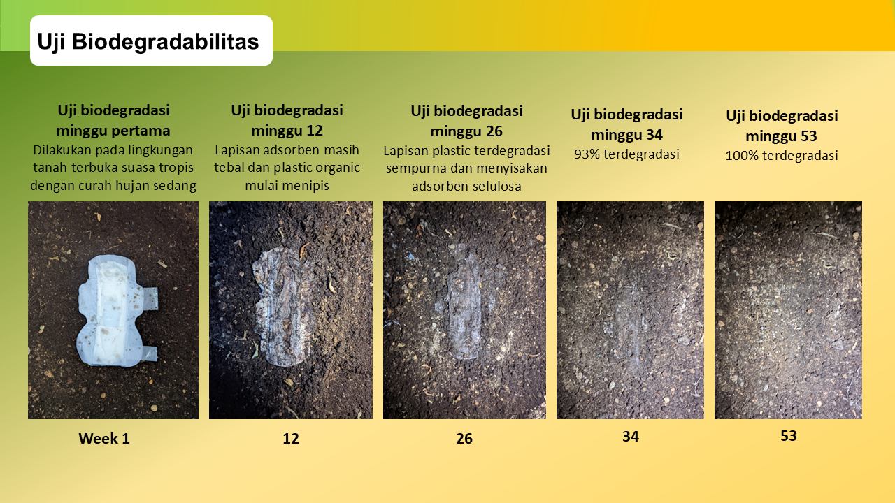

No-Poverty
Improve the livelihoods of over 1000 farmers and local people in West Borneo by 2025.
Biotechnology Start-Up that Utilizes Pineapple Leaf Waste for Environmentally Friendly Derivative Products. By Building a Social-Based Business, Pinawaste develops a social enterprise in Malaya Village.
Kami memproduksi produk biodegradable dan berkelanjutan terbuat dari Serat Daun Nanas (PLF) yang ramah lingkungan.
Find out more
Beside of that, in the last view decades, one of the most popular trends is the use of disposable sanitary napkins that simple to use. but we need to more considered that common disposible sanitary napkins made by syntetic plastic material is hard to decomposed. based on WHO data survey 2020, Indonesia has become the most Cervix Cancer sufferers about 62% caused by sanitary napkins that are not up to standard, especially sanitary napkins those made through a chemical bleaching process.

Eco Green Menstrual Pad (Ecopads) yaitu sebuah pembalut menstruasi yang ramah lingkungan dan menggunakan serat daun nanas sebagai bahan utamanya. Ecopads dibuat menggunakan selulosa yang berasal dari serat daun nanas yang diproses menjadi bioadsorben, menjadikannya sebuah pembalut sekali pakai yang berbeda dengan produk sejenis lainnya. Keunikan dari Ecopads terletak pada kemampuannya untuk terurai secara alami dalam tanah. Lapisan tahan air pada Ecopads menggunakan bahan yang disintesis dari Singkong afkir (tidak layak konsumsi grade 2) yang kemudian diproses menjadi bioplastik. Hasilnya adalah lapisan film yang tahan air dan berdasarkan uji degradasi, lapisan ini hanya membutuhkan waktu sekitar 53 minggu untuk terurai secara alami.
To become the largest agrotechnology-based social enterprise in Indonesia, and export to more than 100 countries to reduce the use of trees and plastics

Improve the livelihoods of over 1000 farmers and local people in West Borneo by 2025.
Use 100% natural leaves fiber, increase the use of pineapple leaves beside of the fruit, and reduce 5 billion plastic by 2025.
Avoiding the use of disposable tableware and plastic straw to keep the ocean clean of debris.
Pinawaste partners with farmers, local communities, NGOs, and government to support the growth and development of the enterprise.
The whole production process is eco-friendly, with minimal carbon emission, no landfill and no plastic recycling. This product are also reduce the use of wood and bamboos for making utenslis.